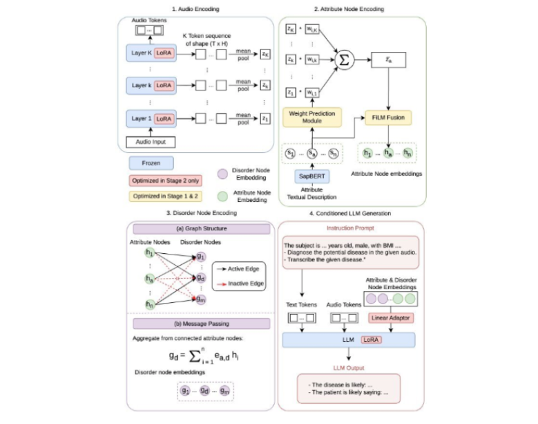
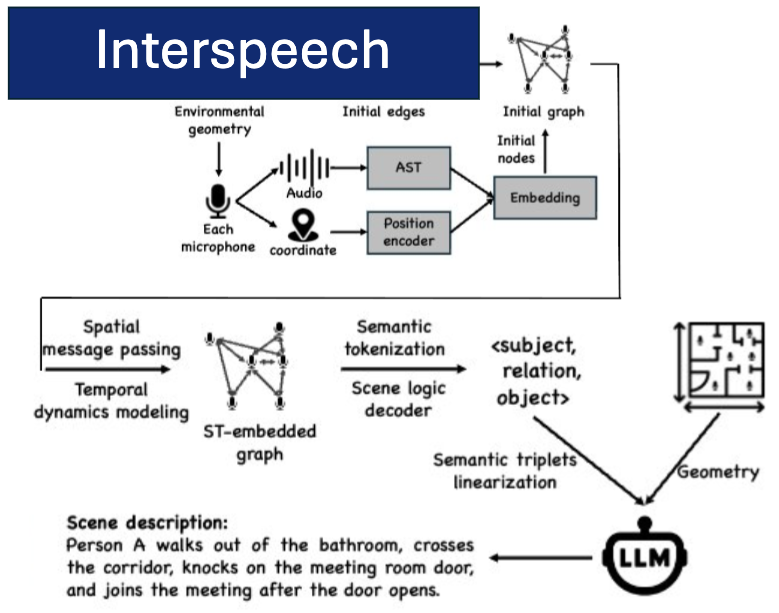
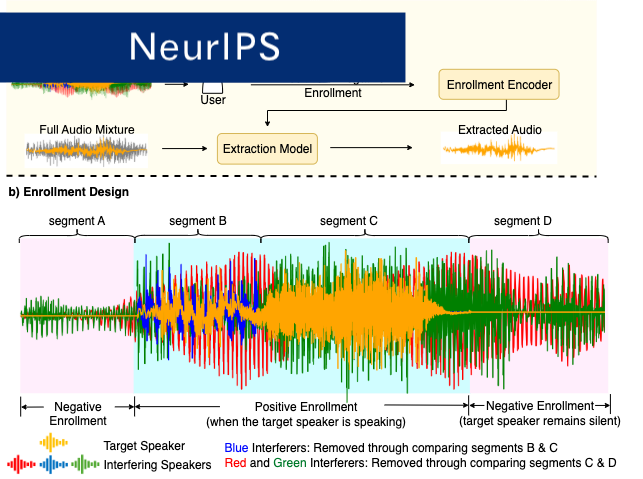
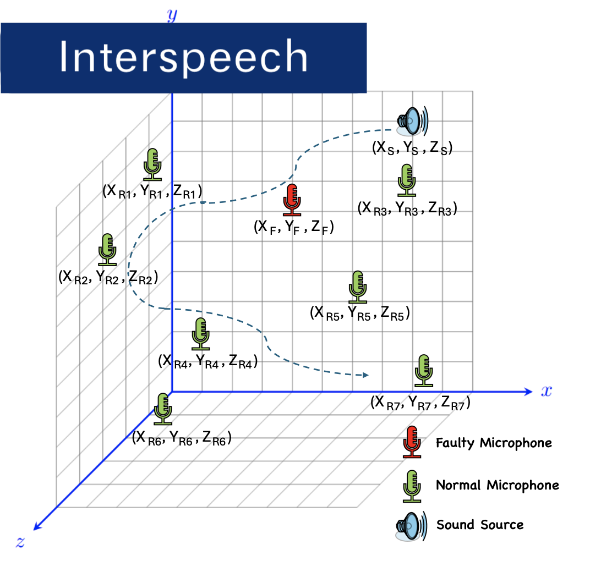
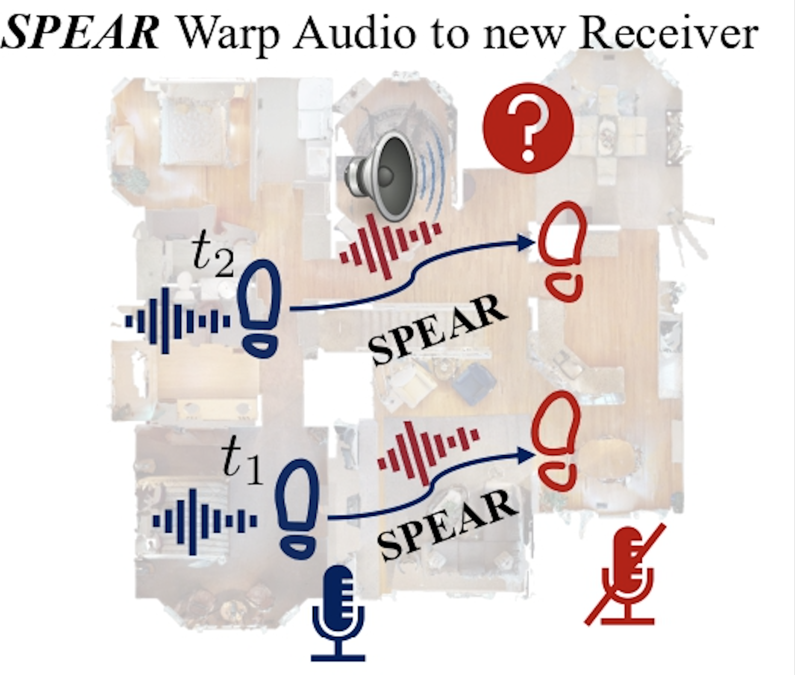
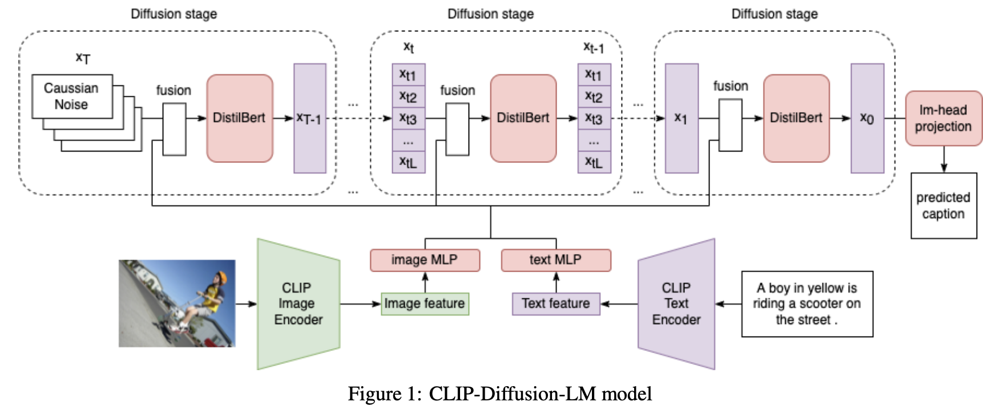

Shitong Xu
Ph.D. Candidate in Computer Science
University of Oxford
shitong.xu [at] cs.ox.ac.uk
GitHub | LinkedIn | Google Scholar
About Me
I am a fourth-year Ph.D. candidate in Computer Science at the University of Oxford, supervised by Prof. Niki Trigoni and Prof. Andrew Markham. I obtained my Master and Bachlor degree in Imperial College London, where I completed my Master thesis under the supervision of Prof. Ben Glocker.
Research Interest
My research lies at the intersection of Audio Signal Processing and Multimodal Machine Learning. Specifically, my work focuses on developing deep learning models that can understand both the semantic meaning and the spatial acoustic properties of complex audio environments.
Rather than relying solely on data-driven learning, I incorporate physical, geometric, and domain-specific priors into my deep learning architectures. My research is organized around three connected directions:
- Robust Semantic Understanding: Developing models capable of decoding semantic information from complex, real-world audio. This includes designing flexible enrollment strategies for isolate target speakers under challenging, noisy conditions; and integrating domain knowledge for data-scarce tasks like pathological speech detection.
- Spatial Audio Modeling & Localization: Incorporating acoustic propagation models and spatial geometry into deep learning systems for sound source localization and audio rendering at novel positions, including with distributed and uncertain microphone geometries.
- Joint Spatial-Semantic Scene Analysis: Bridging semantic perception with spatial acoustic scene understanding. By fusing these two capabilities, I build environment-aware frameworks that provide a holistic, distributed understanding of complex acoustic scenes.
Research Experience

Shitong Xu, Chang Xu, Zilong Wang.
2026, In submission

Yiyuan Yang, Shitong Xu, Niki Trigoni, Andrew Markham.
Interspeech 2026

Shitong Xu, Yiyuan Yang, Niki Trigoni, Andrew Markham.
Neural Information Processing Systems (NeurIPS), 2025

Yiyuan Yang, Shitong Xu, Niki Trigoni, Andrew Markham.
Interspeech 2025

Yuhang He*, Shitong Xu*, Jiaxing Zhong, Sangyun Shin, Niki Trigoni, Andrew Markham.
2024

Shitong Xu
2022
Education and Intern Experience
Education
Oct 2023 - Present
PhD in Computer Science
Oct 2019 - Aug 2023
MEng (Integrated Bachelor's and Master's) in Computing
Graduated with First Class Honours
Internship
Microsoft Research Asia, Mar 2026 - July 2026
Advised by Chang Xu, Zilong Wang
Cisco system, Apr 2022 - Sep 2022
Advised by Shubham Bakshi, Arthur Drozdov
Teaching Assistant
Machine Learning (Oct - Dec 2023, Oxford)
Deep Learning for Healthcare (Feb - Apr 2024, Oxford)
Physics Informed Machine Learning (Feb - Apr 2025, Oxford)